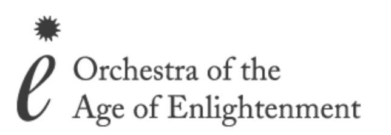
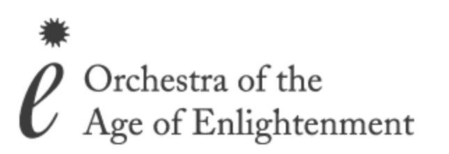

About
A rising star on the European early music scene, violinist Elicia Silverstein is rapidly garnering praise for her nuanced, bold and insightful performances of repertoire ranging from the 17th to the 21st century. A performer on both historical and modern instruments, Silverstein is equally at home as a soloist with orchestra, giving recitals and playing chamber music. Her inventive and thoughtful approach to concert programming, as well as the sincerity and exuberance she brings to musical communication, distinguishes Silverstein as one of the most important voices of her generation.
Silverstein made her London recital debut in 2015 with a sold out concert at the Spitalfields Music Summer Festival, performing a programme of unaccompanied works for violin from the seventeenth and eighteenth centuries. Subsequently, she was featured as a soloist in the 21st Ambronay European Baroque Academy tour, performing the Telemann Concerto for Three Violins with Enrico Onofri and British-Italian violinist Mayah Kadish in Italy, France, Slovenia and Portugal. Over the past several seasons, Silverstein has also appeared as a soloist with groups including the Norwegian Barokkanerne, Ensemble Odyssee (NL), the Steinitz Bach Players (UK), the Cambridge Concentus (US), and the Orchestra of the Age of Enlightenment, with whom she performed as one of the two viola d'amore soloist on their 2016 St. John Passion Tour. As a recitalist, Silverstein is a regular performer at some of the most important early music festivals in the UK, Italy, Switzerland, Norway, Sweden, and Poland, including the Brighton Early Music Festival (UK), The Larvik Barokk Festival (NO), Capella Cracoviensis’ Musica Poetica Festival (PL), and at venues including King’s College Chapel (Cambridge, UK), the Muziekgebouw Aan’t Ij (NL), and Jordan Hall (US). As a chamber musician, Silverstein has performed with such esteemed musicians as Patrick Ayrton, Richard Egarr, Robert Levin, Naruhiko Kawaguchi, Ani Kavafian, Paul Coletti, and members of the Ebène Quartet.
In autumn 2018, Silverstein will release her first solo album, 'The Dreams and Fables I Fashion', featuring works by Biber, Sciarrino, Pandolfi-Mealli, Berio and Bach for the new UK label Rubicon Classics.
Born in 1990 in New York City, Silverstein began playing the violin at the age of two. From age six, she studied with Ecaterina Gerson and then Louise Behrend at the School For Strings, later continuing her studies the Juilliard School's Pre-College Division (2002-2008) first with Louise Behrend, and ultimately with Curtis Macomber. Upon graduating from high school at the Professional Childrens' School in New York City, Silverstein moved to Los Angeles to pursue studies with Robert Lipsett and Arnold Steinhardt. She earned her Bachelor of Music degree at The Colburn School’s Conservatory of Music, where she was selected to perform as a soloist with the Colburn Orchestra on numerous occasions. Silverstein moved to Europe in 2013 when she was awarded a Netherlands-America Foundation Fulbright grant to study connections between avant-garde twentieth century Italian music and seventeenth-century stylus phantasticus music, under the supervision of Vera Beths, Anner Bylsma and Lucy van Dael at the Conservatorium van Amsterdam, where she completed her Master of Music degree in 2015 with the highest honours. She currently resides in Italy with her husband, the baroque cellist Mauro Valli. Silverstein plays on a Jean-Baptiste Vuillaume violin crafted in Paris in 1856, copy of a Guarnerius del Gesu, and on bows made by René-William Groppe, Ralph Ashmead, and Gerhard Landwehr.
 
